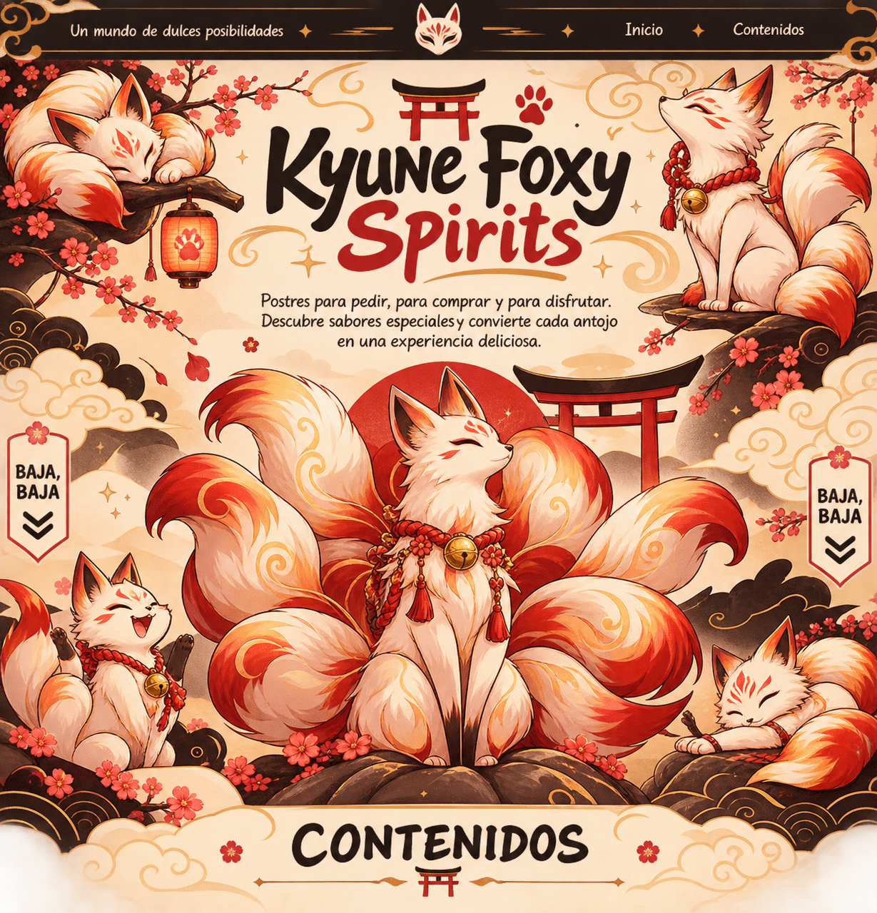

Inicio Contenidos Bajar Bajar
Kyune Foxy Spirits
Postres y Pan
Elige una categoría y descubre nuestras delicias. Haz clic en una de las imágenes para ir directamente a su sección.
Postres
Bienvenido a nuestra sección de postres. Aquí podrás descubrir nuestras opciones dulces.
Pan
Bienvenido a nuestra sección de pan. Aquí podrás descubrir nuestras variedades recién horneadas.